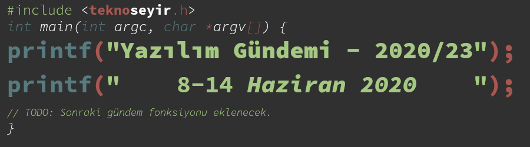
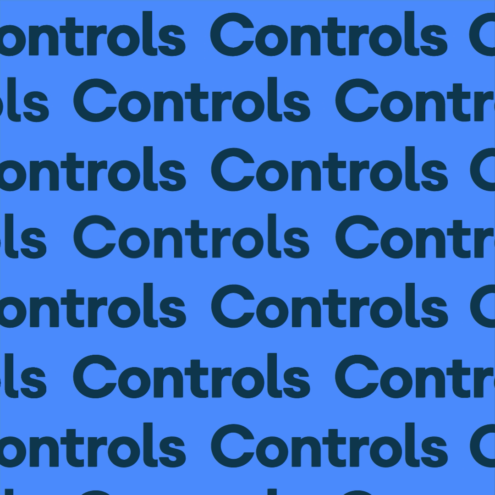
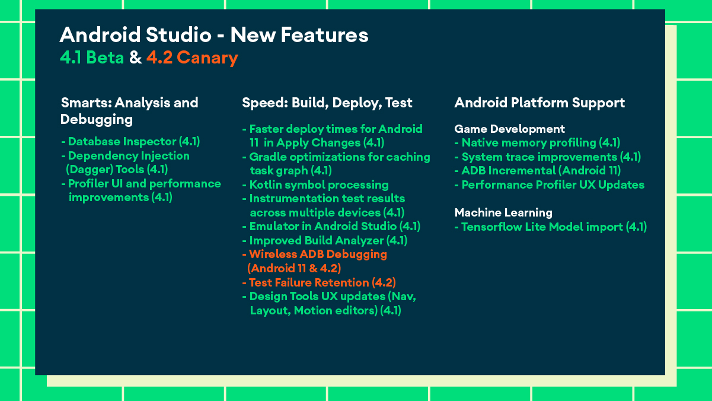
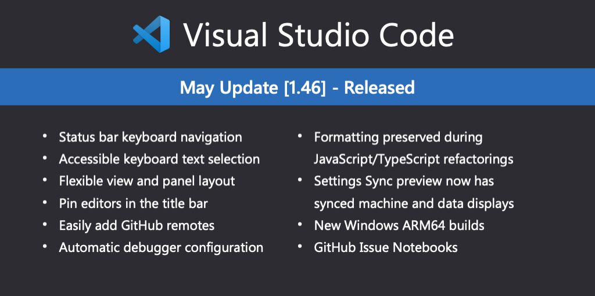

Yazılım Gündemi - 2020/23
8-14 Haziran 2020
İçindekiler
- 1. PHP 25 yaşında ve PHP 8 sürümü yayın takvimi yayınlandı
- 2. Android 11 Beta yayınlandı
- 3. Visual Studio Code Go eklentisi artık Go projesinin parçası haline geldi
- 4. Apache Software Foundation belgeseli yayınlandı
- 5. Visual Studio Code Mayıs 2020 (v1.46) sürümü yayınlandı
- 6. Yaklaşan Online Etkinlikler
- 7. Diğer Haberler
- 8. Lisans

< Önceki Gündem | 8-14 Haziran 2020 | Sonraki Gündem >
1 PHP 25 yaşında ve PHP 8 sürümü yayın takvimi yayınlandı
Geçtiğimiz hafta içerisinde PHP programlama dili 25 yaşına girdi. Yani yaratıcısı Rasmus Lerdorf'un Personal Home Page Tools adı altında kendi kişisel ihtiyaçları için geliştirdiği C kütüphanesinin ilk sürümünün yayınlanmasının ardından 25 yıl geçti. Bugün ise web arka yüz (back-end) tarafında en çok kullanılan programlama dillerinden birisi haline gelmiş durumda. JetBrains firması da PHP'nin 25 yıllık hikayesini anlatan bir sayfa hazırladı. Mutlaka göz atmanızı tavsiye ederim. Ben de PHP ile yaşıtım :)
Ben de programlamaya derinlemesine merak salmadan önce ortaokuldayken forum siteleri açıp, kapatmakla uğraşıyordum sürekli. phpBB, MyBB, SMF (Simple Machines Forum) ve vBullettin gibi birçok forum altyapıysa uğraştım. Bunları özelleştirdim, eklentiler geliştirdim fakat maalesef açtığım hiçbir forum sitesi tutmadı. Hepsi PHP ile geliştirilmiş sistemler olduğu için tabii bir miktar PHP de öğrenmiş oldum. Sonraları programlamaya ilgim daha da arttı ama o zamanlarda güzel zamanlardı :). Paket yönetim sistemleri ve standardizasyon çalışmalarından önceki PHP gerçekten zor zamanlar yaşatıyordu insanlara ama Composer ve PHP-FIG ile birlikte bu tarz sorunlar da aşıldı fakat o zamanlardan kalan insanların ön yargılarını hala daha kırabilmiş değil. Hala daha insanlar "PHP öldü" deseler de PHP, diğer hype teknolojilerin uzağında sektörde daha aktif kullanılarak yaşımına devam ediyor. Benim de yazmaktan zevk aldığım bir programlama dili, umarım bir gün PHP kaynak kodlarına katkı sağlama noktasına da gelebilirim. İyi ki doğdun PHP, nice senelere! :)
Ayrıca geçtiğimiz hafta içerisinde PHP 8.0 sürümü için de yayın takvimi duyuruldu. Eğer bir aksilik olmazsa PHP 8.0 sürümünün yayın çizelgesi bu şekilde olacak:
| Tarih | Sürüm Etiketi |
|---|---|
| 25 Haziran 2020 | Alpha 1 |
| 09 Temmuz 2020 | Alpha 2 |
| 23 Temmuz 2020 | Alpha 3 |
| 04 Ağustos 2020 | Feature Freeze (*) |
| 06 Ağustos 2020 | Beta 1 |
| 20 Ağustos 2020 | Beta 2 |
| 03 Eylül 2020 | Beta 3 |
| 17 Eylül 2020 | Release Candidate 1 |
| 01 Ekim 2020 | Release Candidate 2 |
| 15 Ekim 2020 | Release Candidate 3 |
| 29 Etkim 2020 | Release Candidate 4 |
| 12 Kasım 2020 | Release Candidate 5 |
| 26 Kasım 2020 | General Available (Stabil son sürüm) |
2 Android 11 Beta yayınlandı
Google Android takımı mayıs ayının son haftasında Android 11 Beta sürümünü, Amerika'daki olaylar nedeniyle yayınlamayı ertelediklerini duyurmuştu. Aradan geçen birkaç haftanın ardından geçtiğimiz hafta ise Android 11 Beta sürümü yayınlandı. Canlı yayın yerine bu sefer çeşitli kısa videolar yayınlayarak duyuruyu yaptılar.
Bu sürümde üzerinde durdukları üç ana konu var: İnsanlar, Kontroller ve Gizlilik. Bu üç konu altındaki yenilikler ise şu şekilde:

- İnsanlar:
- Anlık mesajlaşma uygulamalarından gelen bildirimler bildirim panelinde ayrı özel bir bölümde gösterilecek.
- Başka bir uygulamadayken mesajlaşma uygulamalarından bildirim gelince uygulamayı açmadan bildirime tıklayarak cevap yazılabilecek. Bubbless API buna izin veriyor.
- Otomatik tamamlama önerileri artık daha içeriğe özel olacak.
- Sesli kontrol ile telefonun birçok özelliğini kontrol edebilme.

- Kontroller:
- Cihaz Kontrolleri ile artık telefonunuza bağlı akıllı cihazları tek bir konumdan yönetebileceksiniz. Kilit tuşuna basılı tutarak açabileceğiniz bu ekranda akıllı cihazlarınıza çeşitli komutlar gönderebileceksiniz. Teknik detaylar için buraya tıklayabilirsiniz.
- Medya Kontrolleri ile de telefonunuzun ses ve görüntü içeriklerini farklı cihazlar arasında paylaştırma işlemleri yapabileceksiniz. Teknik detaylar için buraya tıklayabilirsiniz.
- Gizlilik:
- Tek seferlik izinler ile artık ilgili uygulamaya bir izini sadece bir seferlik verebileceksiniz. Uygulamanın ikinci kez aynı şeyi kullanabilmesi için tekrar izin vermeniz gerekecek. Teknik detaylar için buraya bakabilirsiniz
- İzinleri otomatik sıfırlama: Android 11'de artık bir uygulama belirli bir periyotta hiç kullanılmadıysa, sistem onun aldığı izinleri otomatik olarak sıfırlayacak. Kullanıcı tekrar uygulamayı açarsa tekrar izin verilmesi gerekecek. Teknik Detaylar
- Arka planda konum verisi kullanabilmek için artık özel izin almak gerekiyor. Bu konuya yazılım gündeminin önceki yazılarında da (bkz: Yazılım Gündemi - 2020/15) değinmiştik. Detaylar
- Geçtiğimiz yıllarda hayatımıza giren Google Play Sistem Güncellemeleri ile güncellenebilecek yeni 12 tane modül eklendi.
Biz geliştiricileri ilgilendiren özelliklerden bazıları da şu şekilde:
- Geliştirici Özellikleri kısmına birçok ayarın açılıp kapatılabileceği yeni bir arayüz eklendi.
- Uygulamalarınızı stabil bir şekilde yeni sistemlere geçirebilmeniz için yeni Platform Stability
- Uygulamada hata ayıklama için kablosuz ADB özelliklerinde iyileştirmeler.

Şekil 5: Android Studio 4.1 Beta ve 4.2 Canary ile gelen özellikler
Bu sürümle birlikte gelen diğer özellik ve değişiklikler için konu başlığına eklediğim ya da yazı içerisinde satır aralarında verdiğim teknik detaylar bağlantılarına tıklayabilirsiniz. Eğer aramızda Android uygulama geliştirmede deneyimli arkadaşlar varsa, onlar da yorumlar bölümünde önemli buldukları özellik ve değişiklikleri vurgulayabilirler.
3 Visual Studio Code Go eklentisi artık Go projesinin parçası haline geldi
Microsoft tarafından açık kaynak olarak geliştirilen Visual Studio Code metin editörünün Go programlama dili için olan eklentisi, geçtiğimiz hafta içerisinde sahibi Microsoft'dan Google'a Go takımına geçti. Eklentinin yeni depo adresi bu şekilde oldu: https://github.com/golang/vscode-go. Benim tahminim artık yeni bir Go sürümü yayınlandığında periyodik olarak aynı zamanda VS Code Go eklentisi de güncellenecek, böylece de yeni özellikler için Microsoft'un ilgili takımının ya da açık kaynak topluluğunun geliştirme yapmasını beklemek gerekmeyecek.
Geçiş ile ilgili Go takımının yazdığı blog yazısına konu başlığına eklediğim bağlantıya tıklayarak ulaşabilirsiniz.
4 Apache Software Foundation belgeseli yayınlandı
5 Visual Studio Code Mayıs 2020 (v1.46) sürümü yayınlandı

6 Yaklaşan Online Etkinlikler
7 Diğer Haberler
- Cloudflare TV tanıtıldı. Web Sitesi
- Apple, WWDC20 etkinliğinin programını açıkladı.
- JetBrains Geliştirici Ekosistemi 2020 anketi sonuçları açıklandı.
- Facebook Yapay Zeka takımı, programlama dilleri arasında çevirim yapabilen yapay zeka geliştirdi. Akademik Makale
- OpenAI takımı yeni yapay zeka API araçlarını kullanıma açtı.
- AWS yeni hizmetini tanıttı: AWS CodeArtifact.
- GitLab, Peach Teach and Fuzzit şirketlerini satın aldı.
- DigitalOcean, sorunlar giderilene kadar FRA1 ve NYC3 lokasyonlarında yeni Spaces oluşturmayı devre dışı bıraktı.
- QUIC ve HTTP/3 destekli özel NGINX sürümü teknoloji ön izlemesi olarak tanıtıldı.
- .NET 5.0 Preview 5 sürümü duyuruldu.
- Valve, OpenXR Geliştirici Ön İzlemesi sürümünü yayınladı.
- JDK 15 sürümü Rampdown Phase One aşamasına geçti.
- Rust Nightly sürümüne Inline Assembly desteği geldi.
- Dart programlama dili "Null Safety" özelliği ön izleme olarak duyurdu.
- VueJS 3.0.0 Beta 15 sürümü yayınlandı.
- PostgreSQL 12.3 sürümü yayınlandı.
- Apache Flink Stateful Functions 2.1.0 sürümü yayınlandı.
- WildFly 20 sürümü yayınlandı.
- Crystal 0.35.0 sürümü yayınlandı.
- Prisma 2.0 sürümü duyuruldu. GitHub Deposu
- Linkerd 2.8 sürümü duyuruldu.
- Lens 3.5.0 RC1 sürümü yayınlandı.
- xmake v2.3.4 sürümü yayınlandı.
8 Lisans

Yazılım Gündemi - 2020/23 yazısı Eren Hatırnaz tarafından Creative Commons Atıf-GayriTicari-AynıLisanslaPaylaş 4.0 Uluslararası Lisansı (CC BY-NC-SA 4.0) ile lisanslanmıştır.